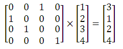
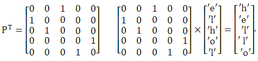

矩阵乘法在一些置换问题上有着很好的应用，特别置换次数较多时，采用矩阵快速幂运算可以加快运算过程。
任意一个置换都能够表示成矩阵的形式。比如，将序列1 2 3 4 置换为 3 1 2 4，相当于以下的矩阵乘法：

一般来说，对于序列1, 2, ..., n，若给出置换方法a1,a2,...,an ，该置换方法表示将原序列的第pi位置上的元素换到第i位置上。
则可以构造置换矩阵P为： P[ai][i]=1 (1<=i<=n)， 其余元素全为0。
显然，置换矩阵每行只有一个元素为1，其余为0。
另外，构造的置换矩阵都是可逆的，并且它的逆矩阵等于它的转置矩阵。
【例1】解码字符串。
给定n个数，代表一个置换。一个长度为n的字符串s经过m次置换后变成另一个字符串t。
例如，输入5个数：2 3 1 5 4 代表一个置换操作。字符串s为“hello”，经过3次置换操作
"hello" -> "elhol" -> "lhelo" -> "helol"后，可得到字符串t为“helol”。
输入n、m和结果字符串t，输出转换前的原字符串s。
（1）编程思路。
由置换规则 2 3 1 5 4，可以快速构造用于字符串s转换到t的置换矩阵P。
而从字符串t转换到s显然是逆操作，而置换矩阵的逆矩阵就是其转置矩阵。因此，用于本题的置换矩阵PT应为：

构造好置换矩阵后，m次操作就是置换矩阵的m次幂，之后再乘以初始序列{1 2 3 4 ....n}，然后输出相应位置的字符就可以了。
（2）源程序。
#include <stdio.h>
#include <string.h>
struct Matrix
{
int mat[81][81]; // 存储矩阵中各元素
};
Matrix matMul(Matrix a ,Matrix b,int n)
{
Matrix c;
memset(c.mat,0,sizeof(c.mat));
int i,j,k;
for (k = 1; k<=n ; k++)
for (i=1 ;i<=n ; i++)
if (a.mat[i][k]!=0)
for (j = 1 ;j<=n ;j++)
c.mat[i][j] = (c.mat[i][j] + a.mat[i][k] * b.mat[k][j]) ;
return c;
}
Matrix quickMatPow(Matrix a ,int n,int b) // n阶矩阵a快速b次幂
{
Matrix c;
memset(c.mat ,0 ,sizeof(c.mat));
int i;
for (i = 1 ;i <= n ;i++)
c.mat[i][i] = 1;
while (b!=0)
{
if (b & 1)
c = matMul(c ,a ,n); // c=c*a;
a = matMul(a ,a ,n); // a=a*a
b /= 2;
}
return c;
}
int main()
{
int n,m,p[81],i;
Matrix a,b,ans;
char str[82];
while (scanf("%d%d",&n,&m) && n!=0 && m!=0)
{
memset(b.mat,0,sizeof(b.mat));
for (i=1;i<=n;i++)
b.mat[1][i]=i;
memset(a.mat,0,sizeof(a.mat));
for (i=1;i<=n;i++)
{
scanf("%d",&p[i]);
a.mat[i][p[i]]=1;
}
getchar();
gets(str);
ans=quickMatPow(a,n,m);
ans=matMul(b,ans,n);
for (i=1;i<=n;i++)
printf("%c",str[ans.mat[1][i]-1]);
printf("\n");
}
return 0;
}
将此源程序提交给HDU 2371 “Decode the Strings”，可以Accepted。
【例2】送给圣诞夜的礼品。
已知序列1,2,3,…,n，给出m个置换操作， 例如某个置换操作 6 1 3 7 5 2 4，表示把6位置上的元素换到1位置上，1位置上的元素换到2位置上…。
求原序列为1,2,3,……,n的序列按给出的m个置换操作的顺序进行k次置换后得到的新序列。若k>m，则第m+1次置换操作做第1个置换操作，第m+2次置换操作做第2个置换操作，…。
数据说明： 1<=n<=100；1<=m<=10；1<=k<=2^31-1。
本题完整的描述可以参看 https://vijos.org/p/1049。
（1）编程思路。
搞懂了例1，本题就容易入手了。m 个置换操作需要构造m个置换矩阵。
构造好置换矩阵后，先将m个置换矩阵乘起来，得到ans矩阵，则此时的ans矩阵相当进行了m次操作；再将ans矩阵进行k/m次幂，此时相当进行了k次操作。当然，由于k不一定整除m，因此还需按m个置换操作的顺序进行k%m次的置换操作。
（2）源程序。
#include <stdio.h>
#include <string.h>
struct Matrix
{
int mat[101][101]; // 存储矩阵中各元素
};
Matrix p[11];
Matrix matMul(Matrix a ,Matrix b,int n)
{
Matrix c;
memset(c.mat,0,sizeof(c.mat));
int i,j,k;
for (k = 1; k<=n ; k++)
for (i=1 ;i<=n ; i++)
if (a.mat[i][k]!=0)
for (j = 1 ;j<=n ;j++)
c.mat[i][j] = (c.mat[i][j] + a.mat[i][k] * b.mat[k][j]) ;
return c;
}
Matrix quickMatPow(Matrix a ,int n,int b) // n阶矩阵a快速b次幂
{
Matrix c;
memset(c.mat ,0 ,sizeof(c.mat));
int i;
for (i = 1 ;i <= n ;i++)
c.mat[i][i] = 1;
while (b!=0)
{
if (b & 1)
c = matMul(c ,a ,n); // c=c*a;
a = matMul(a ,a ,n); // a=a*a
b /= 2;
}
return c;
}
int main()
{
int n,m,k,i,j,num,a[101];
Matrix ans;
scanf("%d%d%d",&n,&m,&k);
for (i=0;i<m;i++)
{
memset(p[i].mat,0,sizeof(p[i].mat));
for (j=1;j<=n;j++)
{
scanf("%d",&num);
p[i].mat[j][num]=1; // 构造的置换矩阵
}
}
memset(ans.mat,0,sizeof(ans.mat));
for (i=1;i<=n;i++)
ans.mat[i][i]=1;
for (i=0;i<m;i++)
ans=matMul(p[i],ans,n); // m个置换矩阵先乘起来，注意是左乘
ans=quickMatPow(ans,n,k/m);
for (i=0;i<k%m;i++)
ans=matMul(p[i],ans,n); // 剩余的k%m个矩阵相乘，代表剩余的k%m次操作
memset(a,0,sizeof(a));
for (i=1;i<=n;i++)
for (j=1;j<=n;j++)
a[i]=a[i]+(ans.mat[i][j])*j;
for (i=1;i<=n;i++)
printf("%d ",a[i]);
printf("\n");
return 0;
}